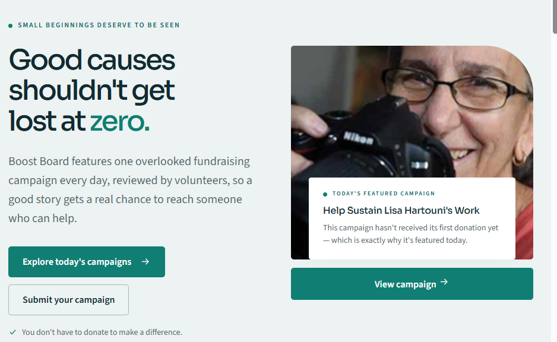

Big news: Lisa's GoFundMe campaign just received its first donation. A heartfelt thank-you to Dr. Marie Cartier — a longtime collaborator who brought the Intersections Project into her own classrooms at Cal State Northridge — for being the very first person to step up. It means a lot, and it's exactly the kind of momentum this campaign needs.
Thank You, Boost Board
We also want to say thank you to Boost Board, which featured Lisa's campaign today as its spotlighted fundraiser — specifically because it hadn't received its first donation yet. Boost Board's whole idea is simple and generous: feature one overlooked fundraising campaign a day, reviewed by volunteers, so a good story gets a real chance to reach someone who can help.
Boost Board itself is a small, volunteer-built project too — the kind of quiet, useful thing that deserves its own signal boost. If you have a moment, take a look at what they're building and consider sharing it along with Lisa's campaign.
You can help in two ways: share this post with someone who can help, and if you're able, consider a donation — every bit helps carry this momentum forward.
Visit the campaignIn Case You Haven't Seen It
Here's the Press Telegram's video feature on Lisa's photography work and her 2015 "Amazing Women" recognition — a good introduction to the four decades of work this campaign is helping to sustain.
Thank you for reading this far — it genuinely helps. If you can, please share the campaign with someone who can help, and consider a donation if you're able.
— The Volunteer Team